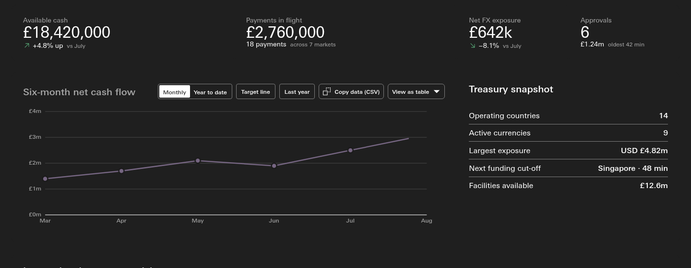
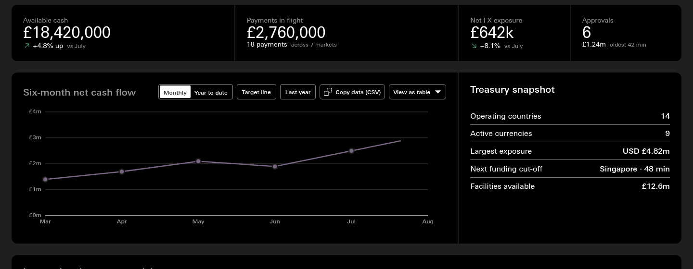
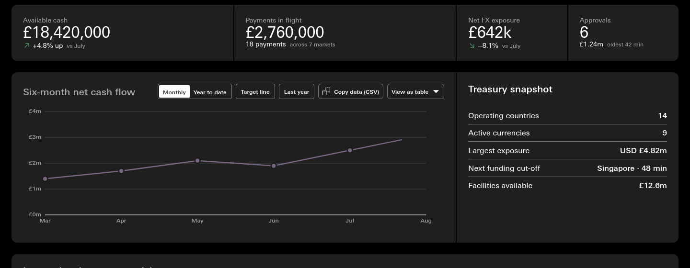
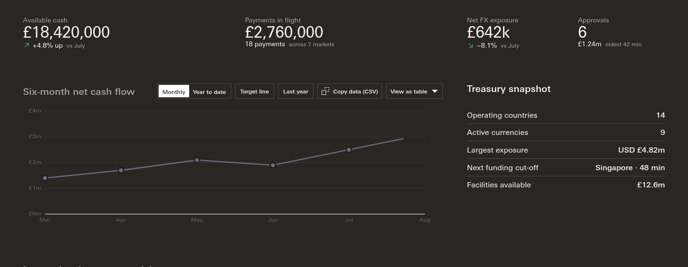
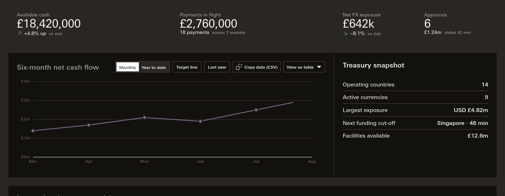
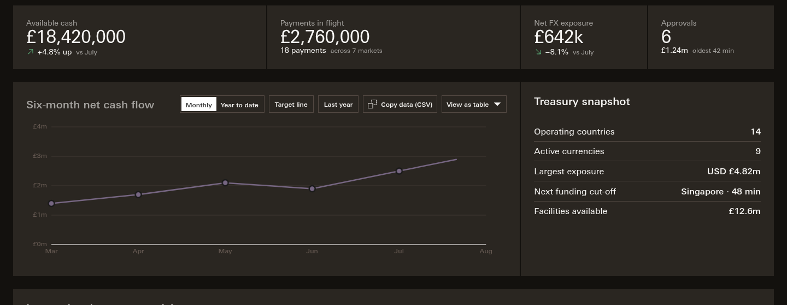

Session 310 · review page · The dark ground
You said you could not see a tile colour in dark mode. You were right: there isn't one. Below are today's page, your reading (dark grey ground, black tiles) and the reverse, side by side on the banking demo.
01 · Today
In light mode the ground is a pale grey and the tiles are white, so each tile reads as a sheet sitting on the page. In dark mode both colours are the same dark grey, in every theme. The 2px gutter between tiles is there, but it is drawn in the same colour, so nothing shows.
record: W-309g2 · measured at the seat, the computed background of the page, the bento and the first tile
02 · Three readings · the main call
Each picture below is the top of the page: the four metrics, the cash flow chart and the treasury snapshot. Only two colours change. Everything else, text and inks included, is exactly as it is today.



Which reading does dark mode take?
Recommendation: your reading, dark grey ground and black tiles, because it mirrors light mode and gives one rule for both.
03 · Supercharge
Supercharge's darkest colour is a warm near-black, not pure black. Whichever reading you choose above, the proposal is that Supercharge follows the same rule with its own darkest and its own grey.



Recommendation: yes, so the four themes stay one rule.
04 · Anything else
Anything else on this page
notes/_lanes/310/render_dark.py at the seat, Playwright over file://, viewport 1440, on dashboards/international-banking-dashboard.canon.html at 7bc6b0c5 (canon.css and type.css as they stand). The theme is set on the root with data-apollo-theme, and the mode on the root and on every [data-theme] element.--surface-raised to the theme's darkest on [data-theme="dark"]; the reverse sets --surface-subtle to it. !important is needed for Supercharge, whose own block is more specific.notes/_lanes/310/img/facts.json): the body, the .c-bento.dashboard-bento and the first .dashboard-tile. The page draws its ground with --surface-subtle and its tiles with --surface-raised; in the shared dark token block of knowledge/canon/canon.css both are #1F1F1F, in Supercharge's dark block both are #2A2621.